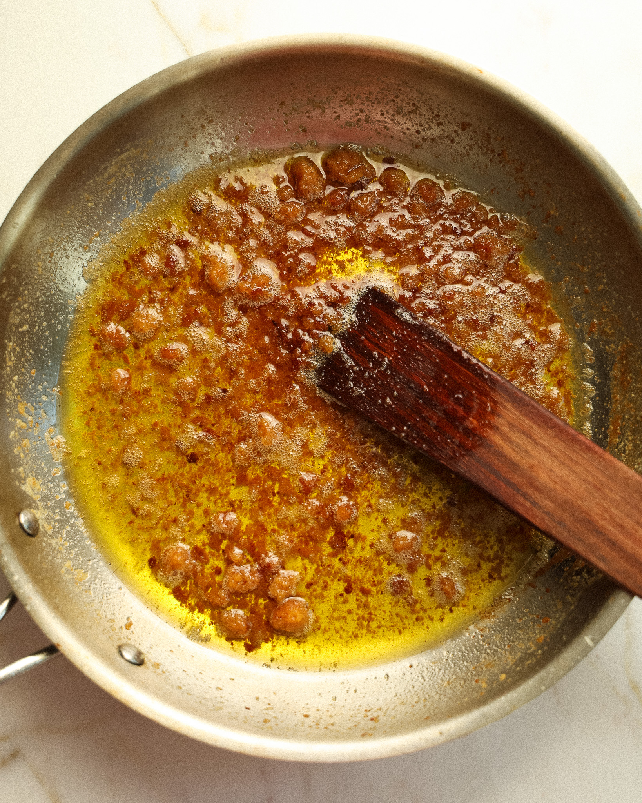
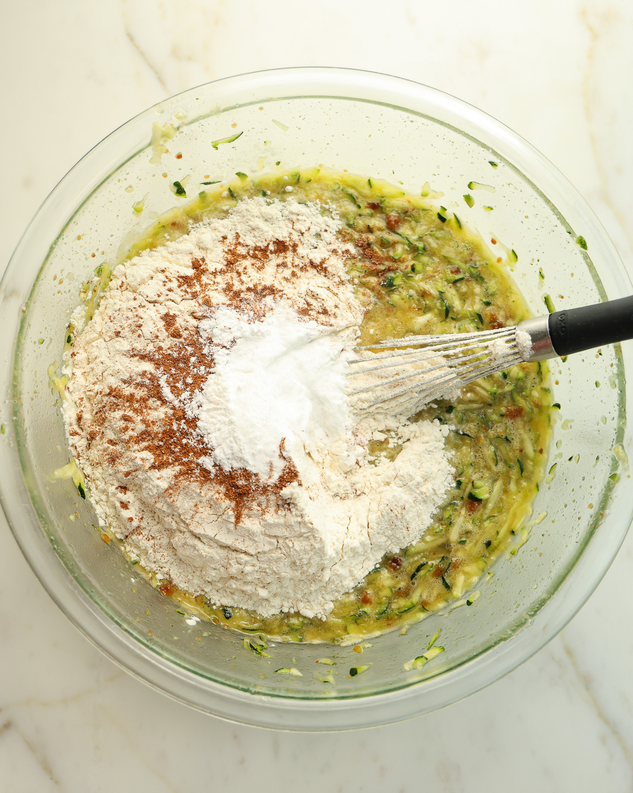
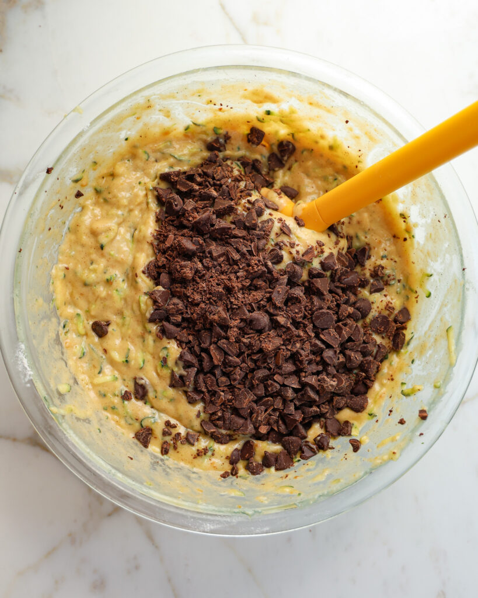
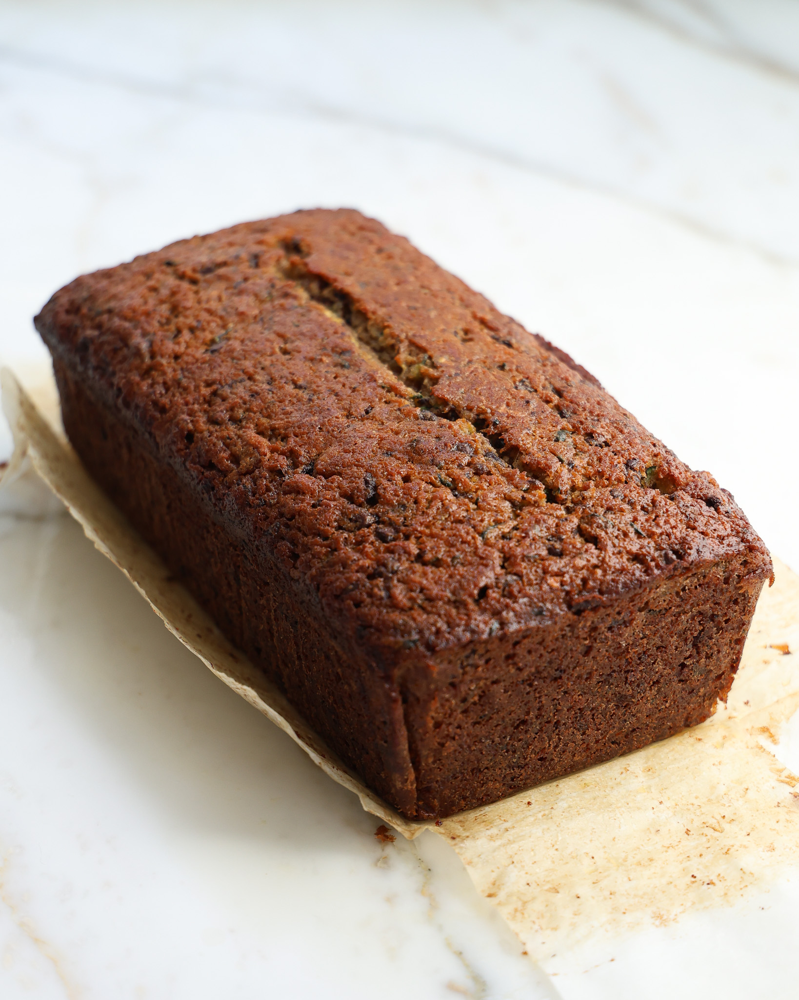

This moist zucchini bread is made with brown butter, white miso, and dark chocolate. The miso adds saltiness and umami, while the brown butter gives the bread a rich,nutty flavor.
Prep time
25 minutes
Cook time
55 minutes
Total time
1 hour 20 minutes
Ingredients
Baking Instructions
- Prep the zucchini: Grate the zucchini and gently squeeze out some of the excess water.
- Make the brown miso butter: Melt the butter over medium heat. Add the miso and mix into a paste. Let it bubble, foam, and turn golden brown for about 4–5 minutes.
- Combine with zucchini: Pour the hot brown butter mixture over the grated zucchini and whisk.
- Add the wet ingredients: Add the sugar, eggs, and vanilla. Whisk until smooth.
- Add the dry ingredients: Stir in the flour, baking powder, baking soda, and salt.
- Fold in chocolate: Gently mix in the chopped chocolate.
- Bake: Pour the batter into a parchment-lined 9x5-inch loaf pan. Bake at 350°F for 50–55 minutes.
- Cool: Let the bread rest for 30–45 minutes before slicing.
Process Photos
A closer look at the baking process, from mixing the batter to the finished loaf.
-

-

Mixing the ingredients
-

Fold in the chocolate
-

The finished loaf